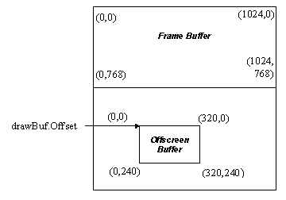

Offscreen video memory on the controller can be used for caching bitmap information to be used for fast BitBlt and SrcTransBlt operations for sprite animation. It can also be used to cache offscreen bitmap data for fast GUI operations. Drawing to offscreen display memory can be done in one of three ways. The first way is to simply use coordinates past the last Y coordinate for the currently active draw buffer, which is most useful when blitting cached bitmap data from offscreen video memory to display memory. The second way is to use the SetDrawBuffer function to make the offscreen memory the active draw buffer with the same dimensions as the main display screen. This will work on all controllers and is similar to multi-buffering mentioned above, but you never display from the offscreen buffer (note that you need to properly account for the hardware alignment requirements for the offscreen buffer starting address and scanline pitch).
The third method is to use the SetDrawBuffer function to set the active drawing buffer to a non-conforming offscreen memory buffer on hardware that can support this. This is most useful for setting up offscreen ‘surfaces’ with a possibly different set of dimensions to the main display mode (similar to DirectX offscreen surfaces). The first two methods should be relatively straight forward, but the following code can be used to implement the third case for a 320x240 8bpp buffer starting at the 1Mb memory boundary:
drawBuf.dwSize = sizeof(drawBuf);
drawBuf.Offset = 1048576; // 1Mb offset
drawBuf.Stride = 320;
drawBuf.Width = 320;
drawBuf.Height = 240;
if (state2d.SetDrawBuffer(&drawBuf) != 0)
PM_fatalError(“Unable to set
draw buffer!”);
Note that for non-conforming draw buffers, you must ensure that the Offset and Stride members are aligned to the necessary alignment values defined in the BitmapStartAlign and BitmapStridePad members of the GA_devCtx structure (some hardware requires the use of the AlignLinearBuffer function instead to properly align the buffers). Also be prepared for SetDrawBuffer to fail if the hardware cannot do this, as lots of older hardware is not capable of supporting non-conforming draw buffers. The above code essentially sets up the following framebuffer layout:

Note: If you plan to utilize offscreen memory to store bitmap data, please use the buffer manager functions provided by the GA_bufferFuncs function group to create and manage all flip buffers and offscreen buffers. The buffer functions will provide for maximum compatibility across multiple hardware devices, properly accounting for hardware buffer alignment requirements for storing buffers in offscreen video memory.
Copyright © 2002 SciTech Software, Inc. Visit our web site at http://www.scitechsoft.com